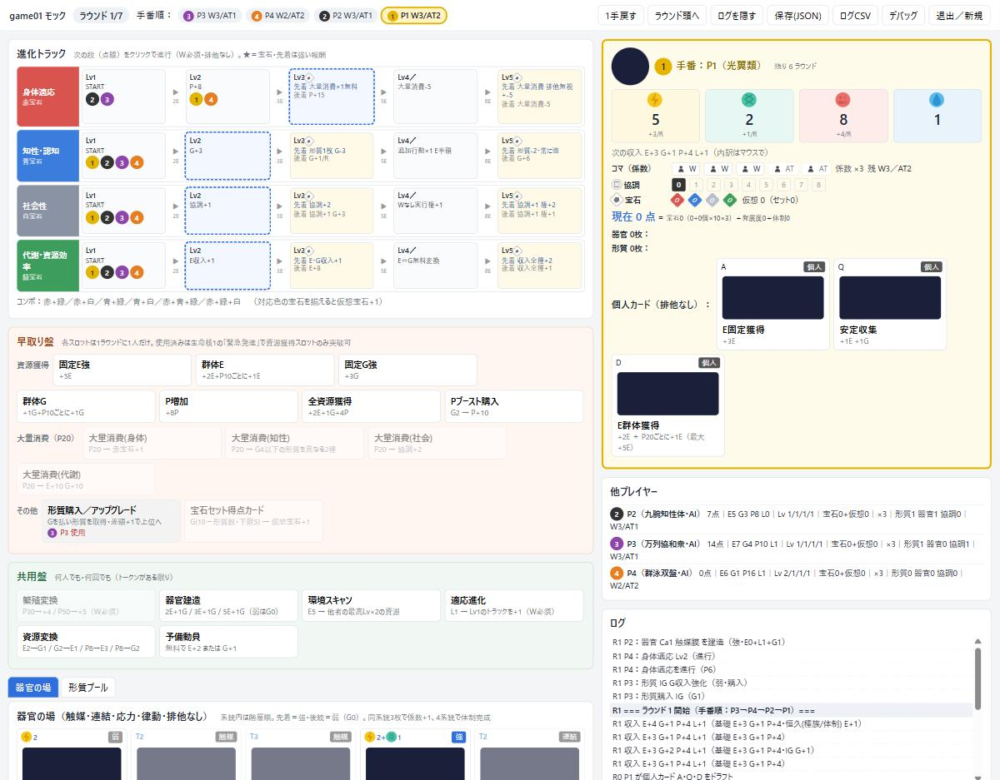

game01 遊び方
オンライン版モックで初めて遊ぶ人向けの説明です。数値はすべてテストプレイ用の仮値です。
03分で全体像
あなたは宇宙生物の種族のリーダーです。資源を集めて種族を進化させ、ゲーム終了時に得点がいちばん高い人が勝ちます。
7ラウンド必ずこの回数で終わる
5回1ラウンドに1人が行動する回数
1回ずつ手番順に1人1回ずつ交代
得点の骨格
（ 宝石の数）× 10 ×（倍率 ×3〜×7）
＋ おまけ点 おまけ点＝（形質の数＋協調の数）× 7 ＋ 器官4系統をそろえたら 50
＋ おまけ点 おまけ点＝（形質の数＋協調の数）× 7 ＋ 器官4系統をそろえたら 50
宝石は「進化トラック」を進めて節目に届くともらえます。倍率は手元のコマを育てると上がります。宝石を集めるか、倍率を育てるかが、このゲームのいちばんの悩みどころです。
宝石4個・倍率×4・形質3枚・協調2。得点は？
1画面の見方
番号をタップすると説明が出ます。スマホでは画面が縦1列に並び、個人ボード（⑥）は進化トラックや盤の下にあります。

PCでは、アプリ上の項目にマウスを乗せると説明が出ます。実行できないカードは薄く表示されます。
21ラウンドの流れ
各プレイヤーはコマを5個持っています。黒丸がワーカー（W）、白丸がアクショントークン（AT）です。手番が来たらコマを1個使って行動を1つ行い、次の人へ交代します。
W AT
WとATの違い
どちらも行動1回分ですが、はWでしかできません。それ以外はATでもできます。
早取り盤と共用盤
早取り盤の枠は1ラウンドに1人だけ使えます（先に使った人の勝ち）。共用盤と進化トラック、自分の個人カードは何人でも使えます。手番順が早いほど、早取り盤の良い枠を取りやすくなります。
残っているコマがATだけ。このラウンド中に進化トラックを進められる？
ラウンド開始時の実宝石が P1=2個、P2=0個、P3=1個。新しい手番順は？
3〜8準備中
資源・進化トラック・倍率・形質と器官・得点・種族の選び方を順に追加します。